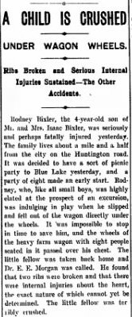

Rodney Jay Bixler 1894 - 1979
[ Home ] | [ Calendar ] | [ Surnames Index ] | [ Family History ]The eldest of 12 children of Thomas Bixler Sr (a farmer) and Cora BuffordRodney Bixler, the fourth cousin twice-removed on the mother's side of Nigel Horne, was born in Fort Wayne, Allen, Indiana, USA on Sep 30, 18941,2,3 and married Florence Dewees (with whom he had 6 children: Rodney J, Deloris M, Erma F, Rosemary, Rev George Edward and Alice M, along with 5 surviving children) in Vigo, Indiana, USA on Jul 19, 19192.
Throughout his life, Rodney lived in several places: in Washington, Owen, Indiana on Apr 15, 19105; in Clay, Owen, Indiana on Apr 1, 19307 (the same place as his mother had been living on Feb 10, 1920); and in Lafayette, Owen, Indiana in 19404 and on Apr 1, 19406.
He died in Oct 1979 in Gosport, Owen, Indiana1,3.
Parents
- Thomas Isaac was born on Mar 15, 1874
- Cora Pearl was born on Mar 26, 1874
Children
- Rev George Edward was born on Mar 11, 1928
Citations
- Social Security Death Index - Findmypast
- United States Marriages - Findmypast
- United States Obituary Notices - Findmypast
- US Census 1940 - Findmypast
- US Census 1910 - Findmypast (was age 15 and the son of the head of the household)
- US Census 1940 - Findmypast (was age 46 and the head of the household)
- US Census 1930 - Findmypast (was age 35 and the head of the household)
Media
Newspaper clipping - 20 Jun 1898

Social Security Death Index - USBMD/SSDI/309384932
US Census 1930 - USC/1930/004950638/00008/021
US Census 1940 - USC/1940/1455745377
United States Marriages - FS/MAR/40025872/1
United States Marriages - R_22714407424
United States Marriages - R_22714407424/1
United States Obituary Notices - US/TRIB/035380810
Family Tree

Generated by ged2site. Last updated on Nov 13, 2024